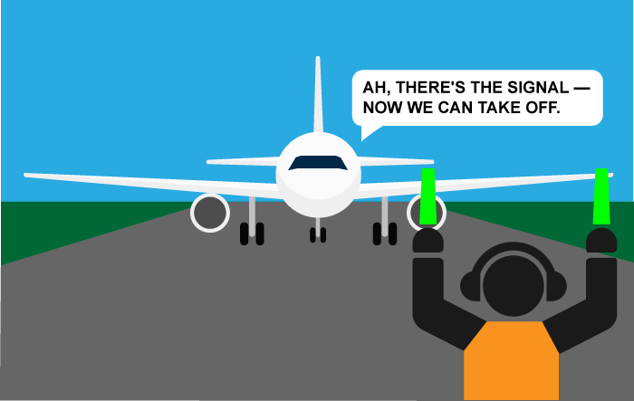

Events are actions or occurrences that happen in the system you are programming, which the system tells you about so you can respond to them in some way if desired. For example if the user clicks a button on a webpage, you might want to respond to that action by displaying an information box. In this article we will discuss some important concepts surrounding events, and look at how they work in browsers. This won't be an exhaustive study; just what you need to know at this stage.
| Prerequisites: | Basic computer literacy, a basic understanding of HTML and CSS, JavaScript first steps. |
|---|---|
| Objective: | To understand the fundamental theory of events, how they work in browsers, and how events may differ in different programming environments. |
A series of fortunate events
As mentioned above, events are actions or occurrences that happen in the system you are programming — the system will fire a signal of some kind when an event occurs, and also provide a mechanism by which some kind of action can be automatically taken (e.g. some code running) when the event occurs. For example in an airport when the runway is clear for a plane to take off, a signal is communicated to the pilot, and as a result they commence piloting the plane.

In the case of the Web, events are fired inside the browser window, and tend to be attached to a specific item that resides in it — this might be a single element, set of elements, the HTML document loaded in the current tab, or the entire browser window. There are a lot of different types of event that can occur, for example:
- The user clicking the mouse over a certain element, or hovering the cursor over a certain element.
- The user pressing a key on the keyboard.
- The user resizing or closing the browser window.
- A web page finishing loading.
- A form being submitted.
- A video being played, or paused, or finishing play.
- An error occuring.
You will gather from this (and from glancing at the MDN Event reference) that there are a lot of events that can be responded to.
Each available event has an event handler, which is a block of code usually defined by the developer that will be run when the event fires. When such a block of code is defined to be run in reponse to an event firing, we say we are registering an event handler. Note that event handlers are sometimes called event listeners — they are pretty much interchangeable for our purposes, although strictly speaking they work together. The listener listens out for the event happening, and the handler is the code that is run in response to it happening.
Note: It is important to note that web events are not part of the core JavaScript language — they are defined as part of the JavaScript APIs built into the browser. You can find out which API specification defines each event by checking out the event reference listed above.
A simple example
Let's look at a simple example to explain what we mean here. You've already seen events and event handlers used in many of the examples in this course already, but let's recap just to cement our knowledge. In the following example, we have a single <button>, which when pressed, will make the background change to a random color:
<button>Change color</button>
button { margin: 10px };
The JavaScript looks like so:
var btn = document.querySelector('button');
function random(number) {
return Math.floor(Math.random()*number);
}
btn.onclick = function() {
var rndCol = 'rgb(' + random(255) + ',' + random(255) + ',' + random(255) + ')';
document.body.style.backgroundColor = rndCol;
}
In this code, we store a reference to the button inside a variable called btn, using the Document.querySelector() function. We also define a function that returns a random number. The third part of the code is the event handler. The btn variable points to a <button> element, and this type of object has a number of events that can fire on it, and therefore, event handlers available. We are listening for the click event firing, by setting the onclick event handler property to equal an anonymous function containing code that generated a random RGB color and sets the <body> background-color equal to it.
This code will now be run whenever the click event fires on the <button> element, i.e., whenever a user clicks on it.
The example output is as follows:
It's not just web pages
Another thing worth mentioning at this point is that events are not particular to JavaScript — most programming languages have some kind of event model, and the way it works will often differ from JavaScript's way. In fact, the event model in JavaScript for web pages differs from the event model for JavaScript as it is used in other environments.
For example, Node.js is a very popular JavaScript runtime that enables developers to use JavaScript to build network and server-side applications. The Node.js event model relies on listeners to listen for events and emitters to emit events periodically — it doesn't sound that different, but the code is quite different, making use of functions like on() to register an event listener, and once() to register an event listener that unregisters after it has run once. The HTTP connect event docs provide a good example of use.
As another example, you can now also use JavaScript to build cross-browser add-ons — browser functionality enhancements — using a technology called WebExtensions. The event model is similar to the web events model, but a bit different — event listeners properties are camel-cased (e.g. onMessage rather than onmessage), and need to be combined with the addListener function. See the runtime.onMessage page for an example.
You don't need to understand anything about other such environments at this stage in your learning; we just wanted to make it clear that events can differ in different programming environments.
Ways of using web events
There are a number of different ways in which you can add event listener code to web pages so that it will be run when the associated event fires. In this section we will review the different mechanisms and discuss which ones you should use.
Event handler properties
These are the properties that exist to contain event handler code that we have seen most frequently during the course. Returning to the above example:
var btn = document.querySelector('button');
btn.onclick = function() {
var rndCol = 'rgb(' + random(255) + ',' + random(255) + ',' + random(255) + ')';
document.body.style.backgroundColor = rndCol;
}
The onclick property is the event handler property being used in this situation. It is essentially a property like any other available on the button (e.g. btn.textContent, or btn.style), but it is a special type — when you set it to be equal to some code, that code will be run when the event fires on the button.
You could also set the handler property to be equal to a named function name (like we saw in Build your own function). The following would work just the same:
var btn = document.querySelector('button');
function bgChange() {
var rndCol = 'rgb(' + random(255) + ',' + random(255) + ',' + random(255) + ')';
document.body.style.backgroundColor = rndCol;
}
btn.onclick = bgChange;
There are many different event handler properties available. Let's do an experiment.
First of all, make a local copy of random-color-eventhandlerproperty.html, and open it in your browser. It's just a copy of the simple random color example we've been playing with already in this article. Now try changing btn.onclick to the following different values in turn, and observing the results in the example:
btn.onfocusandbtn.onblur— The color will change when the button is focused and unfocused (try pressing tab to tab on to the button and off again). These are often used to display information about how to fill in form fields when they are focused, or display an error message if a form field has just been filled in with an incorrect value.btn.ondblclick— The color will change only when it is double-clicked.window.onkeypress,window.onkeydown,window.onkeyup— The color will change when a key is pressed on the keyboard.keypressrefers to a general press (button down and then up), whilekeydownandkeyuprefer to just the key down and key up parts of the keystroke, respectively. Note that it doesn't work if you try to register this event handler on the button itself — we've had to register it on the window object, which represents the entire browser window.btn.onmouseoverandbtn.onmouseout— The color will change when the mouse pointer is moved so it begins hovering over the button, or when it stops hover over the button and moves off it, respectively.
Some events are very general and available nearly anywhere (for example an onclick handler can be registered on nearly any element), whereas some are more specific and only useful in certain situations (for example it makes sense to use onplay only on specific elements, such as <video>).
Inline event handlers — don't use these
You might also see a pattern like this in your code:
<button onclick="bgChange()">Press me</button>
function bgChange() {
var rndCol = 'rgb(' + random(255) + ',' + random(255) + ',' + random(255) + ')';
document.body.style.backgroundColor = rndCol;
}
Note: You can find the full source code for this example on GitHub (also see it running live).
The earliest method of registering event handlers found on the Web involved event handler HTML attributes (aka inline event handlers) like the one shown above — the attribute value is literally the JavaScript code you want to run when the event occurs. The above example invokes a function defined inside a <script> element on the same page, but you could also insert JavaScript directly inside the attribute, for example:
<button onclick="alert('Hello, this is my old-fashioned event handler!');">Press me</button>
You'll find HTML attribute equivalents for many of the event handler properties; however, you shouldn't use these — they are considered bad practice. It might seem easy to use an event handler attribute if you are just doing something really quick, but they very quickly become unmanageable and inefficient.
For a start, it is not a good idea to mix up your HTML and your JavaScript, as it becomes hard to parse — keeping your JavaScript all in one place is better; if it is in a separate file you can apply it to multiple HTML documents.
Even in a single file, inline event handlers are not a good idea. One button is OK, but what if you had 100 buttons? You'd have to add 100 attributes to the file; it very quickly turn into a maintenance nightmare. With JavaScript, you could easily add an event handler function to all the buttons on the page no matter how many there were, using something like this:
var buttons = document.querySelectorAll('button');
for(var i = 0; i< buttons.length; i++) {
buttons[0].onclick = bgChange;
}
Note: Separating your programming logic from your content also makes your site more friendly to search engines.
addEventListener() and removeEventListener()
The newest type of event mechanism is defined in the Document Object Model (DOM) Level 2 Events Specification, which provides browsers with a new function — addEventListener(). This functions in a similar way to the event handler properties, but the syntax is obviously different. We could rewrite our random color example to look like this:
var btn = document.querySelector('button');
function bgChange() {
var rndCol = 'rgb(' + random(255) + ',' + random(255) + ',' + random(255) + ')';
document.body.style.backgroundColor = rndCol;
}
btn.addEventListener('click', bgChange);
Note: You can find the full source code for this example on GitHub (also see it running live).
So inside the addEventListener() function, we specify two parameters — the name of the event we want to register this handler for, and the code that comprises the handler function we want to run in response to it. Note that it is perfectly appropriate to put all the code inside the addEventListener() function, in an anonymous function, like this:
btn.addEventListener('click', function() {
var rndCol = 'rgb(' + random(255) + ',' + random(255) + ',' + random(255) + ')';
document.body.style.backgroundColor = rndCol;
});
This mechanism has some advantages over the older mechanisms discussed earlier. For a start, there is a counterpart function, removeEventListener(), which removes a previously added listener. For example, this would remove the listener set in the first code block in this section:
btn.removeEventListener('click', bgChange);
This isn't significant for simple, small programs, but for larger, more complex programs it can improve efficiency to clean up old unused event handlers, plus this allows you to for example have the same button performing different actions in different circumstances — all you've got to do is add/remove event handlers as appropriate.
Second, you can also register multiple handlers for the same listener. The following two handlers would not be applied:
myElement.onclick = functionA; myElement.onclick = functionB;
As the second line would overwrite the first value of onclick set. This would work, however:
myElement.addEventListener('click',functionA);
myElement.addEventListener('click',functionB);
Both functions would now run when the element is clicked.
In addition, there are a number of other powerful features and options available with this event mechanism. These are a little out of scope for this article, but if you want to read up on them, have a look at the addEventListener() and removeEventListener() reference pages.
What mechanism should I use?
Of the three mechanisms, you definitely shouldn't use the HTML event handler attributes — these are outdated, and bad practice, as mentioned above.
The other two are relatively interchangeable:
- Event handler properties have less power and options, but better cross browser compatibility (being supported as far back as Internet Explorer 8). You should probably start with these as you are learning.
- DOM Level 2 Events (
addEventListener(), etc.) are more powerful, but can also become more complex and are less well supported (supported as far back as Internet Explorer 9). You should also experiment with these, and aim to use these eventually.
Note: If you are called upon to support browsers older than Internet Explorer 8 in your work, you may run into difficulties, as such ancient browsers use different event models form newer browsers. But never fear, most JavaScript libraries (for example jQuery) have built in functions that abstract away cross browser differences. Don't worry about this too much at this stage in your learning journey.
Other event concepts
In this section we will briefly cover some advanced concepts that are relevant to events. It is not important to understand these fully at this point, but it might serve to explain some code patterns you'll likely come across from time to time.
Event objects
Sometimes inside an event handler function you might see a parameter specified with a name such as event, evt, or simply e. This is called the event object, and it is automatically passed to event handlers to provide extra features and information. For example, let's rewrite our random color example again slightly:
function bgChange(e) {
var rndCol = 'rgb(' + random(255) + ',' + random(255) + ',' + random(255) + ')';
e.target.style.backgroundColor = rndCol;
console.log(e);
}
btn.addEventListener('click', bgChange);
Note: You can find the full source code for this example on GitHub (also see it running live).
Here you can see that we are including an event object, e, in the function, and in the function setting a background color style on e.target — which is the button itself. The target property of the event object is always a reference to the element that the event has just occurred upon. So in this example we are setting a random background color on the button, not the page.
Note: You can use any name you like for the event object — you just need to choose a name that you can then use to reference it inside the event handler function. e/evt/event are most commonly used by developers because they are short and easy to remember. It's always good to stick to a standard.
e.target is incredibly useful when you want to set the same event handler on multiple elements, and some something to all of them when an event occurs on them. You might for example have a set of 16 tiles that disappear when they are clicked on. It is useful to always be able to just set the thing to disappear as e.target, rather than having to select it in some more difficult way. In the following example (see useful-eventtarget.html for the full source code; also see it running live here), we create 16 <div> elements using JavaScript. We then select all of them using document.querySelectorAll(), then loop through each one, adding an onclick handler to each that makes it so that a random color is applied to each one when clicked:
var divs = document.querySelectorAll('div');
for(var i = 0; i < divs.length; i++) {
divs[i].onclick = function(e) {
e.target.style.backgroundColor = bgChange();
}
}
The output is as follows (try clicking around on it — have fun):
Hidden example
<!DOCTYPE html>
<html>
<head>
<meta charset="utf-8">
<title>Useful event target example</title>
<style>
div {
background-color: red;
height: 100px;
width: 25%;
float: left;
}
</style>
</head>
<body>
<script>
for(var i = 1; i <= 16; i++) {
var myDiv = document.createElement('div');
document.body.appendChild(myDiv);
}
function random(number) {
return Math.floor(Math.random()*number);
}
function bgChange() {
var rndCol = 'rgb(' + random(255) + ',' + random(255) + ',' + random(255) + ')';
return rndCol;
}
var divs = document.querySelectorAll('div');
for(var i = 0; i < divs.length; i++) {
divs[i].onclick = function(e) {
e.target.style.backgroundColor = bgChange();
}
}
</script>
</body>
</html>
Most event handlers you'll encounter just have a standard set of properties and functions (methods) available on the event object (see the Event object reference for a full list). Some more advanced handlers however add specialist properties containing extra data that they need to function. The Media Recorder API for example has a dataavailable event, which fires when some audio or video has been recorded and is available for doing something with (for example saving it, or playing it back). The corresponding ondataavailable handler's event object has a data property available containing the recorded audio or video data to allow you to access it and do something with it.
{kind=link}
Preventing default behaviour
Sometimes, you'll come across a situation where you want to stop an event doing what it does by default. The most common example is that of a web form, for example a custom registration form. When you fill in the details and press the submit button, the natural behaviour is for the data to be submitted to a specified page on the server for processing, and the browser to be redirected to a "success message" page of some kind (or the same page, if another is not specified.)
The trouble comes when the user has not submitted the data correctly — as a developer, you'll want to stop the submission to the server and give them an error message telling them what's wrong and what needs to be done to put things right. Some browsers support automatic form data validation features, but since many don't, you are advised to not rely on those, and implement your own validation checks. Let's look at a simple example.
First, a simple HTML form that requires you to enter your first and last name:
<form>
<div>
<label for="fname">First name: </label>
<input id="fname" type="text">
</div>
<div>
<label for="lname">Last name: </label>
<input id="lname" type="text">
</div>
<div>
<input id="submit" type="submit">
</div>
</form>
<p></p>
div {
margin-bottom: 10px;
}
Now some JavaScript — here we implement a very simple check inside an onsubmit event handler (the submit event is fired on a form when it is submitted) that tests whether the text fields are empty. If they are, we call the preventDefault() function on the event object — which stops the form submitting — and then display an error message in the paragraph below our form to tell the user what's wrong:
var form = document.querySelector('form');
var fname = document.getElementById('fname');
var lname = document.getElementById('lname');
var submit = document.getElementById('submit');
var para = document.querySelector('p');
form.onsubmit = function(e) {
if(fname.value === '' || lname.value === '') {
e.preventDefault();
para.textContent = 'You need to fill in both names!'
}
}
Obviously this is pretty weak form validation — it wouldn't stop the user validating the form with spaces or numbers entered into the fields, for example — but it is ok for example purposes. The output is as follows:
Note: for the full source code, see preventdefault-validation.html (also see it running live here.)
Event bubbling and capture
The final subject to cover here is something that you'll not come across often, but it can be a real pain if you don't understand it. Event bubbling and capture are two mechanisms that describe what happens when two handlers of the same event type are activated on one element. Let's look at an example to make this easier — open up the show-video-box.html example in a new tab (and the source code in another tab.) It is also available live below:
Hidden video example
<!DOCTYPE html>
<html>
<head>
<meta charset="utf-8">
<title>Show video box example</title>
<style>
div {
position: absolute;
top: 50%;
transform: translate(-50%,-50%);
width: 480px;
height: 380px;
border-radius: 10px;
background-color: #eee;
background-image: linear-gradient(to bottom, rgba(0,0,0,0), rgba(0,0,0,0.1));
}
.hidden {
left: -50%;
}
.showing {
left: 50%;
}
div video {
display: block;
width: 400px;
margin: 40px auto;
}
</style>
</head>
<body>
<button>Display video</button>
<div class="hidden">
<video>
<source src="https://raw.githubusercontent.com/mdn/learning-area/master/javascript/building-blocks/events/rabbit320.mp4" type="video/mp4">
<source src="https://raw.githubusercontent.com/mdn/learning-area/master/javascript/building-blocks/events/rabbit320.webm" type="video/webm">
<p>Your browser doesn't support HTML5 video. Here is a <a href="rabbit320.mp4">link to the video</a> instead.</p>
</video>
</div>
<script>
var btn = document.querySelector('button');
var videoBox = document.querySelector('div');
var video = document.querySelector('video');
btn.onclick = function() {
displayVideo();
}
function displayVideo() {
if(videoBox.getAttribute('class') === 'hidden') {
videoBox.setAttribute('class','showing');
}
}
videoBox.addEventListener('click',function() {
videoBox.setAttribute('class','hidden');
});
video.addEventListener('click',function() {
video.play();
});
</script>
</body>
</html>
This is a pretty simple example that shows and hides a <div> with a <video> element inside it:
<button>Display video</button>
<div class="hidden">
<video>
<source src="rabbit320.mp4" type="video/mp4">
<source src="rabbit320.webm" type="video/webm">
<p>Your browser doesn't support HTML5 video. Here is a <a href="rabbit320.mp4">link to the video</a> instead.</p>
</video>
</div>
When the <button> is clicked, the video is displayed, by changing the class attribute on the <div> from hidden to showing (the example's CSS contains these two classes, which position the box off the screen and on the screen, respectively):
btn.onclick = function() {
videoBox.setAttribute('class','showing');
}
We then add a couple more onclick event handlers — the first one to the <div> and the second one to the <video>. The idea is that when the area of the <div> outside the video is clicked, the box should be hidden again; when the video itself is clicked, the video should start to play.
videoBox.onclick = function() {
videoBox.setAttribute('class','hidden');
};
video.onclick = function() {
video.play();
};
But there's a problem — currently when you click the video it starts to play, but it causes the <div> to also be hidden at the same time. This is because the video is inside the <div> — it is part of it — so clicking on the video actually runs both the above event handlers.
Bubbling and capturing explained
When an event is fired on an element that has parent elements (e.g. the <video> in our case), modern browsers run two different phases — the capturing phase and the bubbling phase. In the capturing phase:
- The browser checks to see if the element's outer-most ancestor (
<html>) has anonclickevent handler registered on it in the capturing phase, and runs it if so. - Then it moves on to the next element inside
<html>and does the same thing, then the next one, and so on until it reaches the element that was actually clicked on.
In the bubbling phase, the exact opposite occurs:
- The browser checks to see if the element that was actually clicked on has an
onclickevent handler registered on it in the bubbling phase, and runs it if so. - Then it moves on to the next immediate ancestor element and does the same thing, then the next one, and so on until it reaches the
<html>element.

(Click on image for bigger diagram)
In modern browsers, by default, all event handlers are registered in the bubbling phase. So in our current example, when you click the video, the click event bubbles from the <video> element outwards to the <html> element. Along the way:
- It finds the
video.onclick...handler and runs it, so the video first starts playing. - It then finds the
videoBox.onclick...handler and runs it, so the video is hidden as well.
Fixing the problem with stopPropagation()
This is annoying behaviour, but there is a way to fix it! The standard event object has a function available on it called stopPropagation(), which when invoked on a handler's event object makes it so that handler is run, but the event doesn't bubble any further up the chain, so no more handlers will be run.
We can therefore fix our current problem by changing the second handler function in the previous code block to this:
video.onclick = function(e) {
e.stopPropagation();
video.play();
};
You can try making a local copy of the show-video-box.html source code and having a go at fixing it yourself, or looking at the fixed result in show-video-box-fixed.html (also see the source code here).
Note: Why bother with both capturing and bubbling? Well, in the bad old days when browsers were much less cross-compatible than they are now, Netscape used only event capturing, and Internet Explorer used only event bubbling. When the W3C decided to try to standardize the behaviour and reach a consensus, they ended up with this system that included both, which is the one modern browsers implemented.
Note: As mentioned above, by default all event handlers are registered in the bubbling phase, and this makes more sense most of the time. If you really want to register an event in the capturing phase instead, you can do so by registering your handler using addEventListener(), and setting the optional third property to true.
Conclusion
You should now know all you need to know about web events at this early stage. As mentioned above, events are not really part of the core JavaScript — they are defined in browser Web APIs.
Also, it is important to understand that the different contexts that JavaScript is used in tend to have different event models — from Web APIs to other areas such as browser WebExtensions and Node.js (server-side JavaScript). We are not expecting you to understand all these areas now, but it certainly helps to understand the basics of events as you forge ahead with learning web development.
If there is anything you didn't understand, feel free to read through the article again, or contact us to ask for help.
See also
- Event order (discussion of capturing and bubbling) — an excellently detailed piece by Peter-Paul Koch.
- Event accessing (discussing of the event object) — another excellently detailed piece by Peter-Paul Koch.
- Event reference